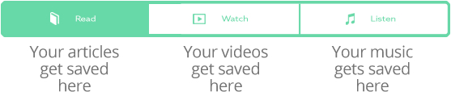

You’re currently in the reader view - a clean and distraction-free way to read your favorite articles.
When you close this view you will see a few really important features:
1) The Main Content Toggle

2) The Add Button
Paste a URL, give Slipstream a few moments to build a beautiful post, and click done (you can add tags now or later).

Indicate to which stream your post belongs by selecting from this mini content toggle found in the Add Modal.
3) Stream Dropdown
Select Discover from the main dropdown to see what the community is adding to Slipstream. The best new articles, videos and music are here! Start following your favorite curators and see them all in one place by selecting the Following stream.
4) Submit Feedback
This is the most helpful thing you can do for us. Click the button at the bottom right and tell us what you think!
We built Slipstream because we couldn’t find a place to save all our favorite stuff, easily enjoy it again, and discover the amazing things other people were saving too!
Hope you enjoy Slipstreaming!
The Slipstream team